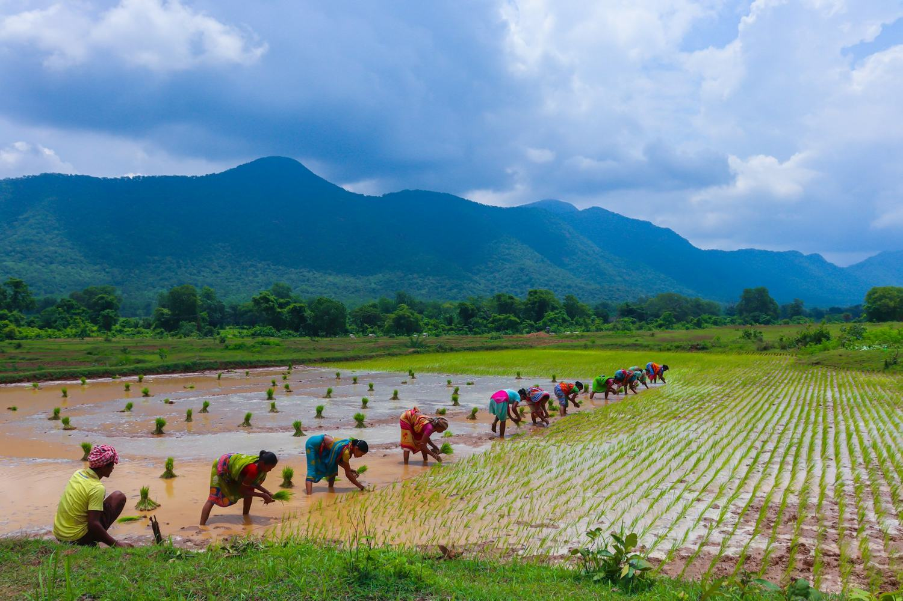
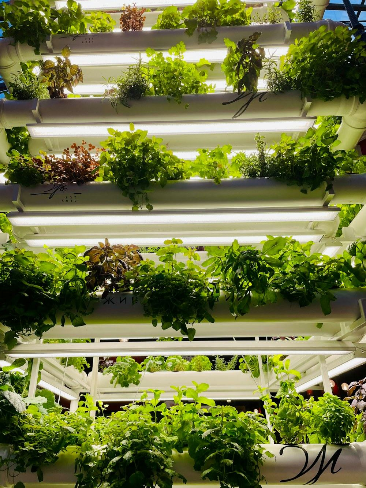
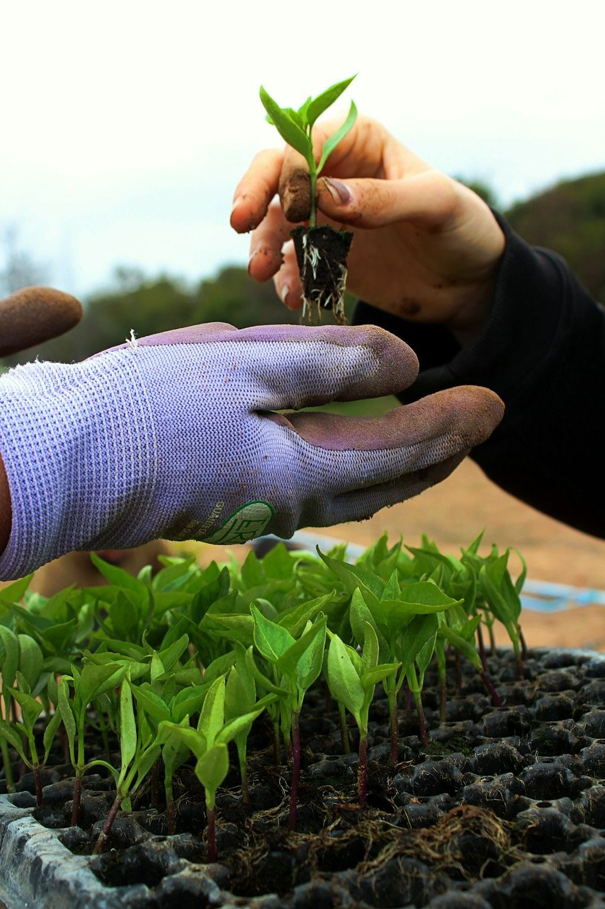

Agricultural consultancy
Advisory and technical guidance on cultivation, greenhouse operation and getting a better result from the ground you already have. It is usually where a project starts.
Agricultural services
Consultancy and technical guidance, irrigation and hydroponic systems, seeds and planting materials, and training — taken on their own, or specified alongside a greenhouse.

What we provide
Most growers come to us for one of these and end up needing two. Because we supply all of them, they can be specified to work together rather than bought separately and made to fit afterwards.
Advisory and technical guidance on cultivation, greenhouse operation and getting a better result from the ground you already have. It is usually where a project starts.

Irrigation designed around your water, your layout and the way you want to work — inside a greenhouse or in the open.

Soil-free growing systems, supplied with the coir based media and planting materials that go with them.

Seeds, plant nursery products and planting materials — supplied alongside the media they will root into and the structure they will grow under.

Training programmes
We run training programmes in modern agricultural cultivation, so the greenhouse, the irrigation and the growing media keep performing after we have handed the project over.
Training can be part of a larger project or arranged on its own.
Before you commit
I want to grow crops more efficiently and reliably, but I need the right greenhouse system, growing media, irrigation or hydroponic solution and expert guidance to get the best results. What growers tell us
Ask us anything
Describe what you are growing and what is not working. We will tell you which of these actually helps — and quote for it.